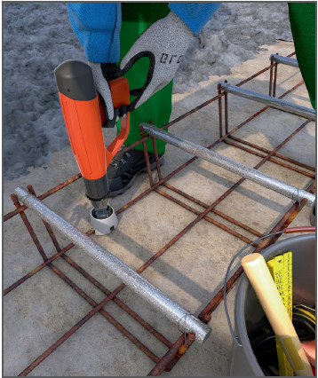
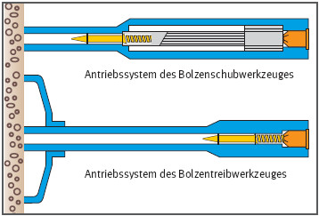
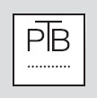

Bolzensetzgeräte |

| Mindestabstände von Setzbolzen | |||
| Werkstoff | |||
| Mauerwerk | Beton, Stahlbeton | Stahl | |
| Mindestabstände der Setzbolzen untereinander | 10facher Bolzenschaft-Ø | 10facher Bolzenschaft-Ø | 5facher Bolzenschaft-Ø |
| Mindestabstände zu freien Kanten | 5 cm | 5 cm | 3facher Bolzenschaft-Ø |

Zulassungszeichen

Prüfzeichen
07/2015